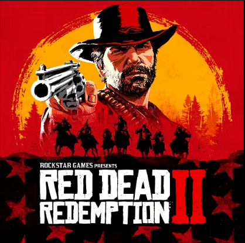
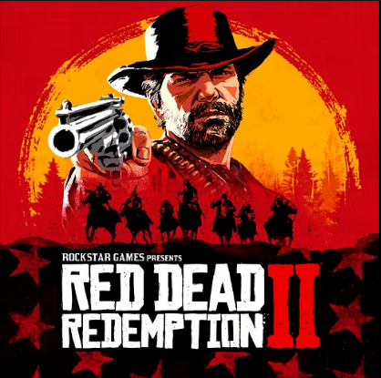
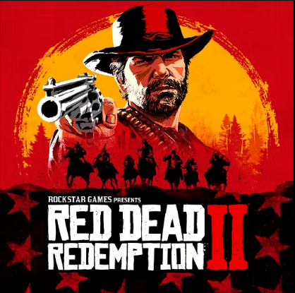
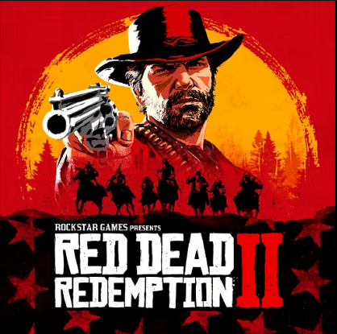

Olá meu nome é Manuel e nesse site aqui decidi falar sobre meus jogos favoritos desde que comecei a jogar, seja online ou offline. Em cada link clicado no header vai abrir uma página falando um pouco da minha experiência com cada um desses jogos. Os consoles que eu já tive foram: PS2, XBOX 360, PS4, PS5, NINTENDO DS LITE e PSP.